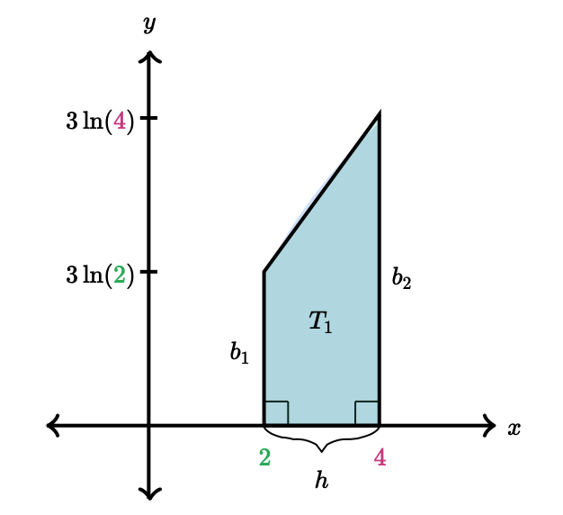

Miscellaneous
Functional Utilities & Notation Conveniences
Right to Left Evaluation
f \triangleleft x &= f(x)
f \circ g \triangleleft x
&= f(g(x)) \\
&= f \triangleleft g \triangleleft x
Left to Right Evaluation
x \triangleright f &= f(x)
Derivative Shorthand
\delta f(x) &= \frac{\mathrm{d}}{\mathrm{d}x} f(x) = f^\prime(x)
For this notation, the derivative with respect to a given variable, is implicit.
Radians & Radian Conversion
Constants
\tau &= 2\pi = 360^{\circ} \\
\pi &= \frac{1}{2}\tau = 180^{\circ}
Conversion
&\text{given}\\
1^{\circ} &= \frac{1}{360} \tau \; {\displaystyle {\text{rad}}} \\
1 \; rad &= \frac{1}{\tau} \cdot 360^{\circ}\\\\
&\text{therefore}\\
x^{\circ} &= \frac{x}{360} \tau \; {\displaystyle {\text{rad}}} \\
x \; rad &= \frac{x}{\tau} \cdot 360^{\circ}
Notice
Take special note of the above. It essentially gives you a simple relation for conversion.
Degree to Radian Conversion Examples
- E.g. #1:
I can say off the top of my head that 29^\circ in radians (in terms of Tau) is \frac{29}{360}\tau\;\mathrm{rad}.
- E.g. #2:
-
9^\circ in radians is \frac{9}{360}\tau\;\mathrm{rad} (of course we can should simplify at this point, but the result is valid). Whereas when using \pi, the result is \frac{1}{20}\pi\;\mathrm{rad}.
Going from Tau to Pi
29^{\circ}
&= \frac{29}{360} \tau \; {\displaystyle {\text{rad}}} \\
&= \frac{29}{360} (2\pi) \; {\displaystyle {\text{rad}}} \\
&= \frac{29}{180} \pi \; {\displaystyle {\text{rad}}}
Trigonometry
Trigonometric Identities and Equations
Limits
L’Hospital’s Rule
\lim_{x\to{a}}\frac{f(x)}{g(x)} &= \lim_{x\to{a}}\frac{f^\prime(x)}{g^\prime(x)}\\
\text{if}\;\lim_{x\to{a}}\frac{f(x)}{g(x)} = \frac{0}{0}
\;&\text{or}\;\lim_{x\to{a}}\frac{f(x)}{g(x)} = \frac{\infty}{\infty}
In other words, if L’Hospital’s Rule applies to indeterminate forms.
Calculus
Derivative Tables
\delta\sin(x) &= \cos(x) \\
\delta\csc(x) &= -\cot(x) \cdot \csc(x)
\delta\cos(x) &= -\sin(x) \\
\delta\sec(x) &= \tan(x) \cdot \sec(x)
\delta\tan(x) &= \sec^2(x) \\
\delta\cot(x) &= -\csc^2(x)
\delta\sin^{-1}(x) &= \frac{1}{\sqrt{1 - x^2}}
\delta\cos^{-1}(x) &= -\frac{1}{\sqrt{1 - x^2}}
\delta\tan^{-1}(x) &= \frac{1}{\sqrt{1 + x^2}}
Integration Tables
\int\sin(x)\;\mathrm{d}x &= -\cos x \\
\int\csc^2(x)\;\mathrm{d}x &= -\cot x \\
\int\csc(x)\cdot\cot(x)\;\mathrm{d}x &= -\csc x \\
\int\csc(x)\;\mathrm{d}x &= \ln\left|\csc x - \cot x\right| \\
\int\sinh(x)\;\mathrm{d}x &= \cosh(x) \\
\int\cos(x)\;\mathrm{d}x &= \sin x \\
\int\sec^2(x)\;\mathrm{d}x &= \tan x \\
\int\sec(x)\cdot\tan(x)\;\mathrm{d}x &= \sec x \\
\int\sec(x)\;\mathrm{d}x &= \ln\left|\sec x + \tan x\right| \\
\int\cosh(x)\;\mathrm{d}x &= \sinh(x) \\
\int\tan(x)\;\mathrm{d}x &= \ln| \sec x | \\
\int\cot(x)\;\mathrm{d}x &= \ln| \sin x | \\
\int b^x\;\mathrm{d}x &= \frac{b^x}{\ln(b)}
\int\frac{1}{x^2 + a^2}\;\mathrm{d}x &= \frac{1}{a}\tan^{-1}\left(\frac{x}{a}\right)
\int\frac{1}{x^2 - a^2}\;\mathrm{d}x &= \frac{1}{2a}\ln\left|\frac{x-a}{x+a}\right|
\int\frac{1}{\sqrt{a^2 - x^2}}\;\mathrm{d}x &= \sin^{-1}\left(\frac{x}{a}\right),\;a>0
\int\frac{1}{\sqrt{x^2 \pm a^2}}\;\mathrm{d}x &= \ln\left|x+\sqrt{x^2\pm a^2}\right|
Riemann Sums
Given
A &= \int_{a}^{b} f(x) = \lim_{n\to\infty}\sum_{i=1}^{n} \Delta{x} \cdot f(x) \;\text{where}\;
\left\{\begin{array}{ll}
\Delta{x} = \frac{b - a}{n}
\end{array}\right.
Left Riemann Sum
A &= \int_{a}^{b} f(x) \;\mathrm{d}x \approx L_n = \sum_{i = 0}^{n-1}\, \Delta{x}\cdot f\left(a + i\cdot\Delta{x}\right)
Right Riemann Sum
A &= \int_{a}^{b} f(x) \;\mathrm{d}x \approx R_n = \sum_{i = 1}^{n}\, \Delta{x}\cdot f\left(a + i\cdot\Delta{x}\right)
Midpoint Riemann Sum
\newcommand{\generalFormat}{
\sum_{\small{\cdots}}^{\small{\cdots}}\, \Delta{x}\cdot f\left(a + \text{“avg. of $x_i$ and $x_{i-1}$”} \cdot \Delta{x}\right)
}
\newcommand{\SigmaExampleOne}{
\sum_{i = 1}^{n}\, \Delta{x}\cdot f\left(a + \frac{x_{i - 1} + x_i}{2} \cdot \Delta{x}\right)
}
\newcommand{\SigmaExampleTwo}{
\sum_{i = 0}^{n-1}\, \Delta{x}\cdot f\left(a + \frac{x_{i + 1} + x_i}{2} \cdot \Delta{x}\right)
}
\begin{equation}
\begin{split}
A = \int_{a}^{b} f(x) \;\mathrm{d}x &\approx \generalFormat\\
&\approx \SigmaExampleOne\\
\text{or alternatively}&\\
A &\approx \SigmaExampleTwo
\end{split}
\end{equation}
We can also do away with the index notation and simplify things.
\newcommand{\SigmaExampleOne}{
\sum_{i = 1}^{n}\, \Delta{x}\cdot f\left(a + \frac{(i - 1) + i}{2} \cdot \Delta{x}\right) =
\sum_{i = 1}^{n}\, \Delta{x}\cdot f\left(a + \frac{2i - 1}{2} \cdot \Delta{x}\right)
}
\newcommand{\SigmaExampleTwo}{
\sum_{i = 0}^{n-1}\, \Delta{x}\cdot f\left(a + \frac{(i + 1) + i}{2} \cdot \Delta{x}\right) =
\sum_{i = 0}^{n-1}\, \Delta{x}\cdot f\left(a + \frac{2i + 1}{2} \cdot \Delta{x}\right)
}
\begin{equation}
\begin{split}
A = \int_{a}^{b} f(x) \;\mathrm{d}x
&\approx \SigmaExampleOne\\
&\approx \SigmaExampleTwo
\end{split}
\end{equation}
Trapezoidal Riemann Sum
\newcommand{\leftSum}{
\sum_{i = 0}^{n-1}\, \Delta{x}\cdot f\left(a + i\cdot\Delta{x}\right)
}
\newcommand{\rightSum}{
\sum_{i = 1}^{n}\, \Delta{x}\cdot f\left(a + i\cdot\Delta{x}\right)
}
\newcommand{\leftSumNoDelta}{
\sum_{i = 0}^{n-1}\, f\left(a + i\cdot\Delta{x}\right)
}
\newcommand{\rightSumNoDelta}{
\sum_{i = 1}^{n}\, f\left(a + i\cdot\Delta{x}\right)
}
\begin{equation}
\begin{split}
A = \int_{a}^{b} f(x) \;\mathrm{d}x &\approx T_n\\
&= \overbrace{\frac{1}{2}\left(L_n + R_n\right)}^{\text{i.e. avg. of two sums}}\\
&= \frac{1}{2}\left(\leftSum + \rightSum\right)\\
&= \frac{\Delta{x}}{2}\left(\leftSumNoDelta + \rightSumNoDelta\right)
\end{split}
\end{equation}
Note that the formula for a trapezoid is A = h\cdot\frac{a + b}{2}.

In this case, height corresponds to width of each interval.
Simpson's Rule
A = \int_{a}^{b} f(x) \;\mathrm{d}x &\approx S_n\;\text{where}\;
\left\{\begin{array}{ll}
\begin{split}
n \;&\text{is even}\\
\Delta{x} &= \frac{b - a}{n}\\
x_i &= a + i\Delta{x}\\
\end{split}
\end{array}\right.\\
&\approx \frac{\Delta{x}}{3}\left[f(x_0) + 4f(x_1) + 2f(x_2) + 4f(x_3) \cdots f(x_i) \cdots f(x_n)\right]\\
Alternatively
\newcommand{\fourOrTwoLiteral}{
{}^4{\mskip -5mu/\mskip -3mu}_2
}
\newcommand{\fourOrTwo}{
\fourOrTwoLiteral
}
\newcommand{\given}{
\;\text{given}\;&
\left\{\begin{array}{ll}
\begin{split}
n \;&\text{is even}\\
\Delta{x} &= \frac{b - a}{n}\\
x_i &= a + i\Delta{x}\\
\mathrm{start} &= f\left(a + 0\Delta{x}\right) = f(a)\\
\fourOrTwo &= \text{alternate between $4$ and $2$}\\
\mathrm{mid} &= \fourOrTwo f\left(x_i\right)\\
\mathrm{end} &= \text{continue until $2f\left(x_n\right)$ (will always end in $2$)}\\
\mathrm{repeat} &= \mathrm{mid}\;\cdots\;\mathrm{end}
\end{split}
\end{array}\right.\\
}
\newcommand{\core}{
\frac{\Delta{x}}{3}\left[\mathrm{start\;\cdot\;\mathrm{repeat}}\right]
}
\begin{equation}
\begin{split}
\given\\
A &= \int_{a}^{b} f(x) \;\mathrm{d}x \approx S_n = \core
\end{split}
\end{equation}